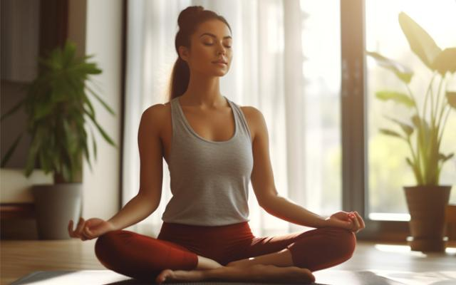

Beneficios de las técnicas de relajación

La relajación ayuda a reducir la ansiedad, mejorar la calidad del sueño y aumentar la claridad mental.
Métodos efectivos para relajarte
- Respiración profunda: Inhala por 4 segundos, mantén el aire por 7 segundos y exhala por 8 segundos.
- Meditación guiada: Usa aplicaciones o videos para realizar meditaciones de 5 a 10 minutos.
- Yoga: Realiza poses básicas como el perro boca abajo o la postura del niño.
- Escucha música relajante: Escoge sonidos de la naturaleza o música instrumental suave.
Recursos adicionales
Descubre videos y guías que te ayudarán a implementar estas técnicas en tu día a día. Encuentra más en nuestro panel de usuario.